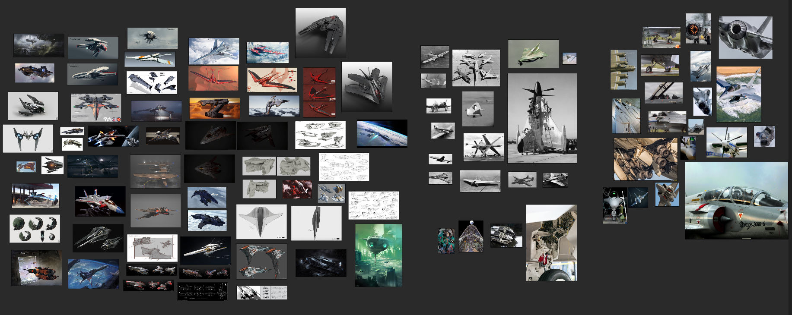
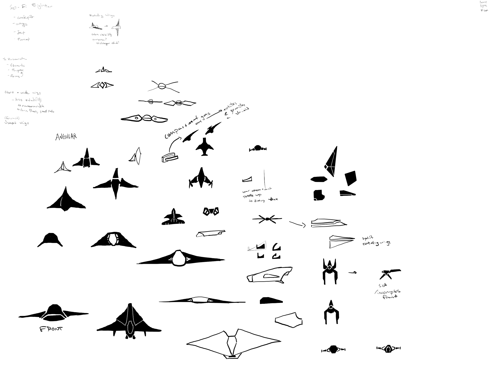
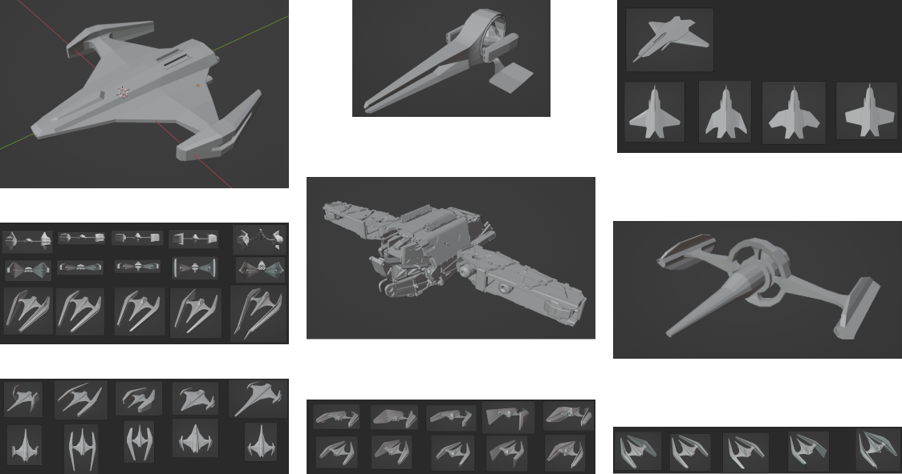
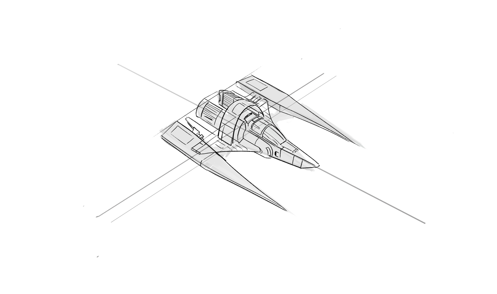
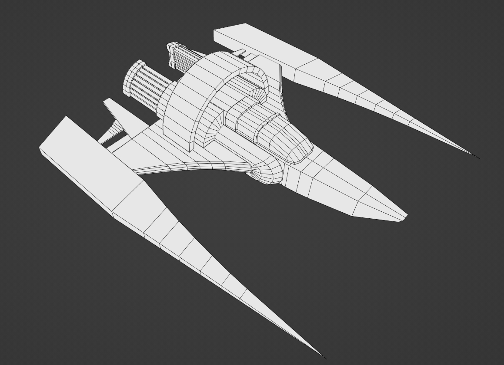
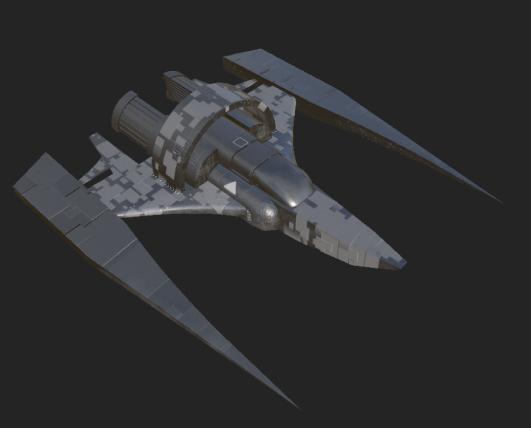
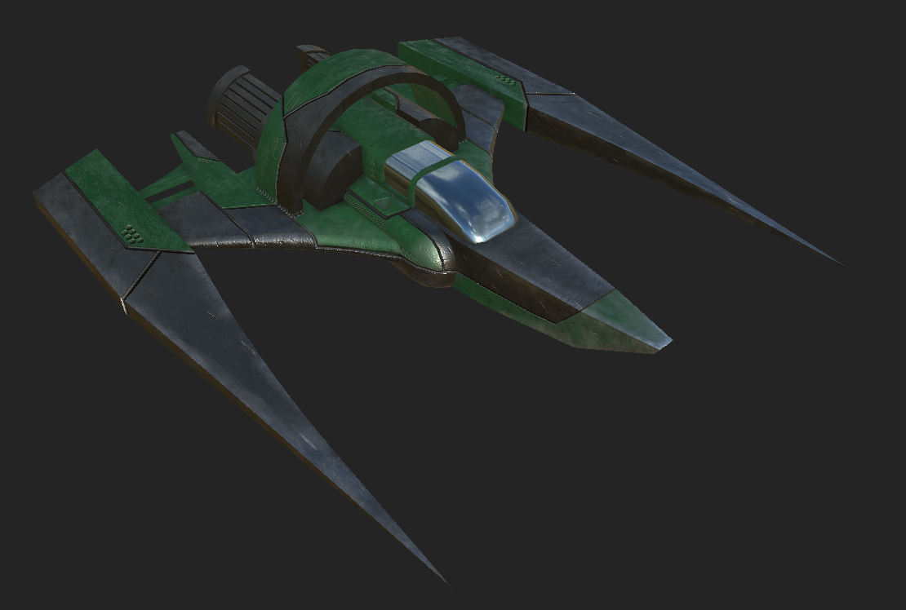
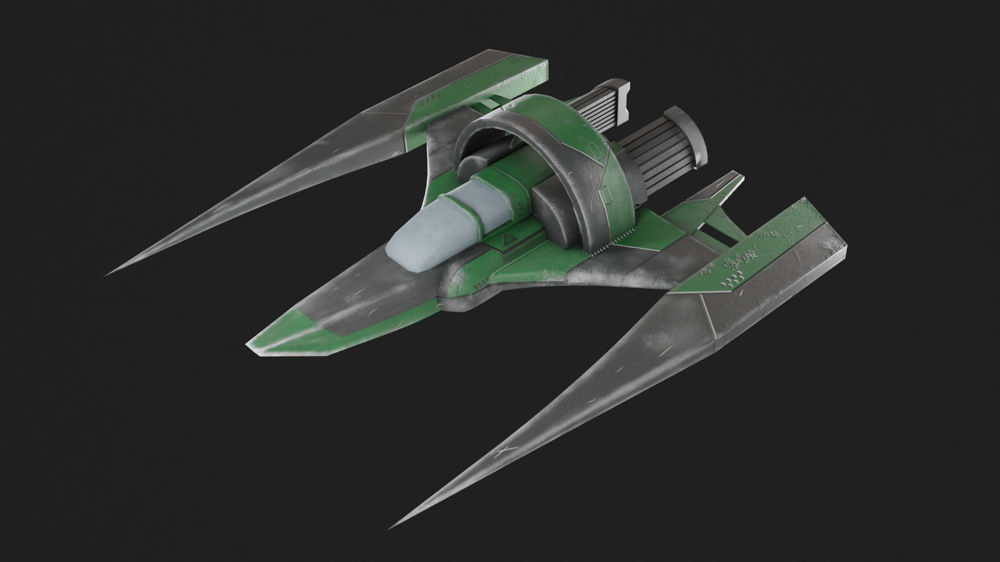
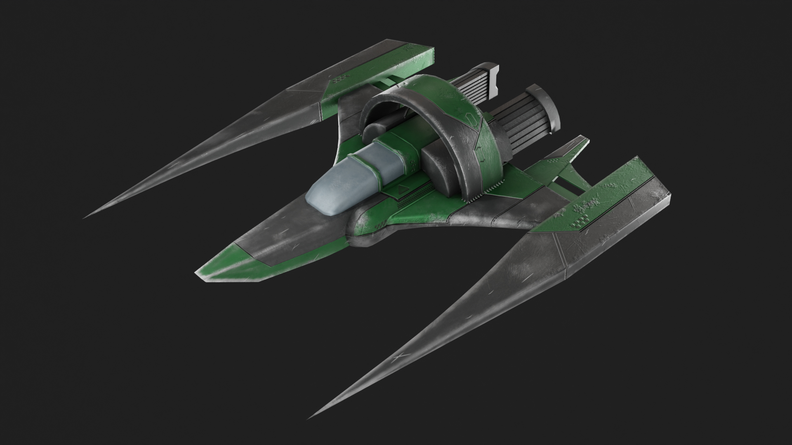
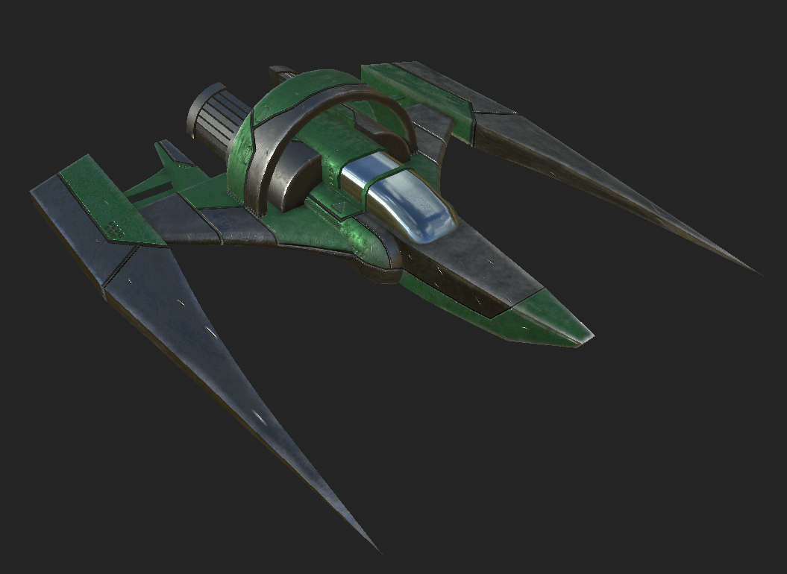

Designing the Jet
I first started by gathering references of fighter jets and aircrafts. These images included real aircraft, concept sketches, and other ideas from around the internet.
Based on these sketches, I started making some thumbnail sketches to ideate on the shape of the jet.
Afterwards in Blender, I kitbashed together some prototype jet models, blocking out some low poly concepts, and doing some shape explorations with the models.
Modelling
Ken gave me feedback on the designs and then gave me a concept sketch based on one of the draft models I made. I then modelled the fighter jet based on his sketch in Blender, keeping the topology to quads and tris. I thought about how to reduce the polygons as much as I could while still retaining details, and what details could be conveyed through texture instead.
Texturing the Jet
From here, I moved onto using Adobe Susbtance Painter to texture the model. As this was my first time using Substance Painter, I spent a bit of time getting used to the tools and drafting different ideas about how I would like the jet to appear.
After getting used to the tools and settings, I moved onto figuring out what the fighter jet should look like. Using a basic round brush and a negative height, I carved out some paneling detail and decals along the model. Then, I decided on two colours - a base dark grey, and a secondary green that I masked onto certain areas.
I then began adding in some impact and damage details along areas that would recieve wear and tear damage if the fighter jet were to be flying into battle. I also went back and modified the geometry and UVs for certain areas that appeared to stretch.
I also made a high poly model and bake mapped it to the low poly model's texture. After some more pointers and refining, I ended up with a fully textured, game ready fighter jet!
VFX
After creating the jet, Ken also had me try a hand at some bullet shooting VFX. I imported the model into Unity and used Photoshop and Embergen to create some textures.

Reflection
I quite enjoyed the process of making the fighter jet. I learnt some new tools to add to my skillsets, and am happy with the final outcome. I was able to use Substance Painter, which I had been looking into trying out for a little while, and found that I quite enjoyed the process of texturing. I also practiced some of my topology skills, improved my understanding of UVs for a game ready asset, and tried my hand at some VFX.